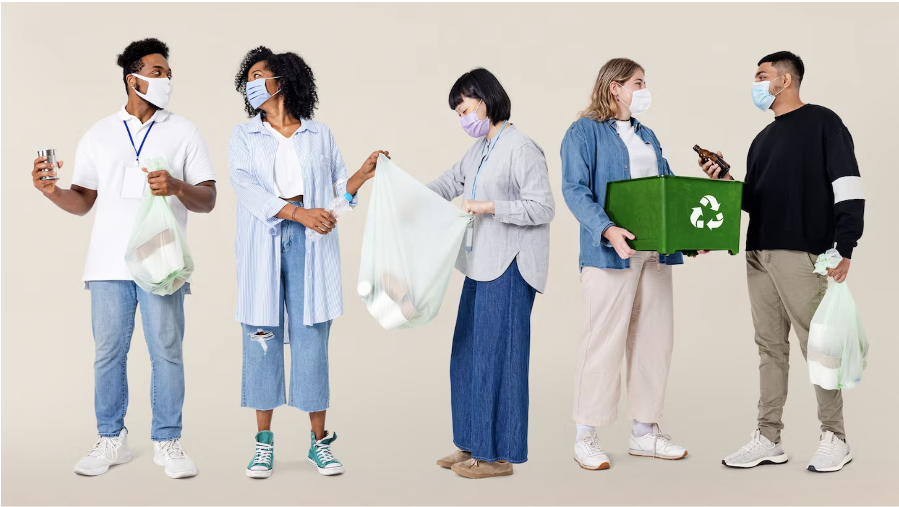
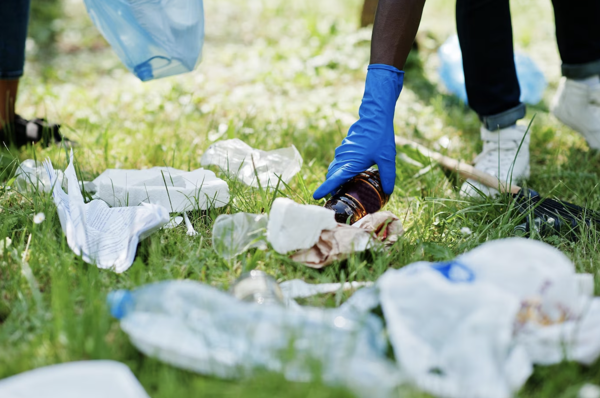
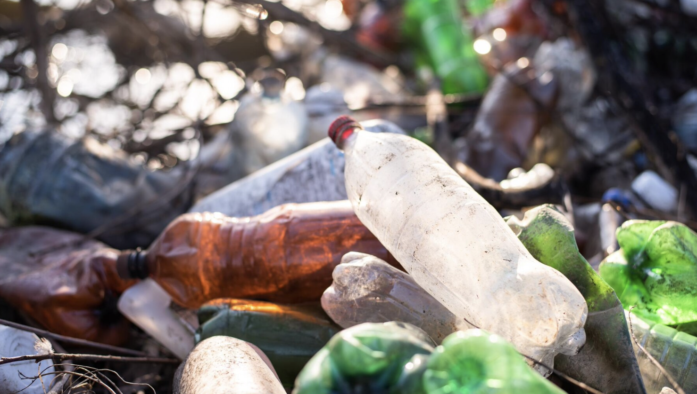

RECYCLING STATISTICS

It turns out that about 35% of people actually recycle, which indicates that the recycling rate is less than 50%.

92% of all plastics, 34% of paper and cardboard products, and 63% of all glass is improperly thrown away as garbage instea of recycling, due to lack of awareness or inaccessibility.

Plastic bottles take up to about 450 years to decompose. Each hour that goes by, there is about 2.5 million plastic bottles being thrown away in the United States.